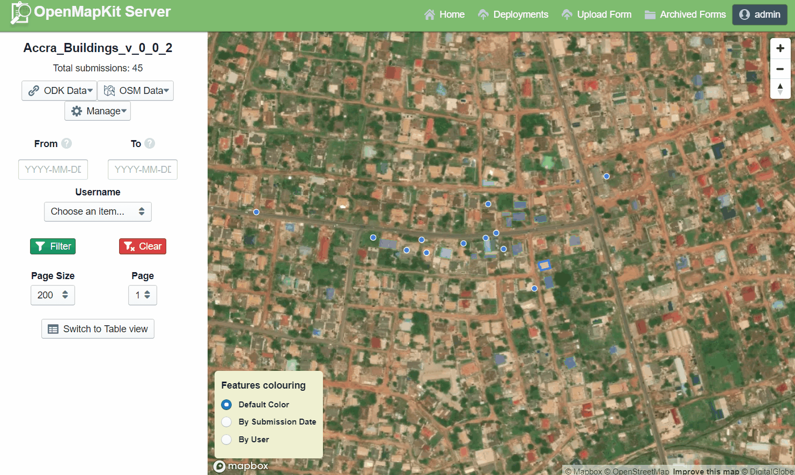

3.4 Serveurs de collecte de données
Cette rubrique présente:
- Aperçu des options de stockage sur serveur
- Conseils sur le choix du serveur pour les besoins de votre projet
- Brefs aperçus des options du serveur
La section suivante fournit un aperçu et un guide pour décider si un serveur est nécessaire pour votre projet et les options à choisir. Pour plus d'informations sur la configuration et la gestion des serveurs, veuillez utiliser la documentation liée à chaque option de serveur.
Aperçu général
Au début d'un projet de cartographie, de nombreuses organisations se demandent si elles ont besoin d'un serveur. Après la collecte de données, vous devrez obtenir les données des appareils. Parfois, il s'agit simplement de collecter et de traiter des données directement à partir des dispositifs de collecte de données. Cependant, cela n'évolue pas bien lorsque vous obtenez plus de personnes qui collectent des données, et cela signifie également que vos données ne sont pas sauvegardées - si vous perdez l'appareil, vous pouvez perdre les données. Avant la collecte des données, il est important d'avoir une stratégie de gestion des données adaptée à vos opérations.

Le choix d'une option de stockage
Serveur cloud vs stockage physique L'utilisation d'un serveur de collecte de données permet une bien meilleure gestion des formulaires et des déploiements, la collecte et l'agrégation des réponses, et cela peut offrir des fonctionnalités supplémentaires pour la visualisation, l'analyse et l'exportation des données. L'utilisation d'un serveur peut être limitée par les ressources disponibles (coût d'un serveur) et/ou la connexion Internet (accès au serveur cloud). Les serveurs utilisés dans les processus de travail de HOT sont:
- POSM
- Serveur OpenMapKit
- Kobo Toolbox
Si l'utilisation d'un serveur n'est pas à portée de main, il est toujours possible et crucial de stocker des copies de données en réserve. Dans ce cas, les données devront être téléchargées ou partagées avec un emplacement central, tel qu'un ordinateur portable, et clonées à un emplacement secondaire tel qu'un disque dur ou un second ordinateur..
Quel serveur dois-je utiliser?
Si vous décidez d'utiliser un serveur, utilisez le tableau suivant pour décider quel est le meilleur choix pour votre projet et les contraintes de ressources. Ce ne sont pas les seules options disponibles, mais plutôt des serveurs que HOT a utilisés et testés sur le terrain pour des projets de cartographie.
| Je veux utiliser un serveur qui… | Kobo Toolbox | OpenMapKit Server | POSM |
|---|---|---|---|
| Est physique ou ne nécessite pas de connexion Internet pour le téléchargement | ✔ | ✔ | ✔ |
| Est basé sur le cloud (téléchargement de données via Internet) | ✔ | ✔ | ✔ |
| Compatible avec les données ODK | ✔ | ✔ | ✔ |
| Compatible avec les données KOBO Collect | ✔ | ✔ | × |
| Compatible avec les données OMK | × | × | × |
| Permet la visualisation de données | × | × | × |
| Fournit une visualisation sur carte des données GPS collectées | × | × | ✔ |
Kobo Toolbox
Kobo Toolbox est une application en ligne qui permet aux utilisateurs de construire des enquêtes Kobo/ODK ainsi que de stocker, de regrouper et de réaliser des analyses des données Kobo/ODK.

Niveau de connaissance requis pour la mise en œuvre et la gestion
Débutant
Utilisez Kobo Toolbox Server si:
- OpenMapKit n'est pas en cours d'utilisation.
- Les données sont collectées au format.xml, comme avec ODK ou Kobo Collect
- GLa collecte de données géospatiales ne comprend pas les polygones - les points GPS sont acceptés
Configuration et gestion des données Visitez kobo.humanitarianresponse.info
OpenMapKit Server
OpenMapKit Server est un système de stockage en cloud spécialement conçu pour stocker et compiler les données OpenMapKit. Les données collectées via OpenDataKit peuvent également être téléchargées sur un serveur OpenMapKit.

Niveau de connaissance requis pour la mise en œuvre et la gestion Intermédiaire
Utilisez OpenMapKit Server si:
- Collecte de données .osm à l'aide de OpenMapKit.
- Collecte de données .xml à l'aide des applications ODK et Kobo.
- Le gestionnaire de projet doit surveiller les données au fur et à mesure qu'elles sont recueillies et téléchargées à partir du terrain.
Installation L'installation et l'hébergement sont assurés par HOT pour les communautés locales OSM et les projets avec lesquels HOT est partenaire actif.
Gestion des données
- OpenMapKit Server permet de télécharger des formulaires ODK et OMK au format .xlsx et de les convertir en formulaires .xml. En d'autres termes, OpenMapKit Server peut convertir les formulaires du format Excel au format numérique lisible par les applications ODK, Kobo et OMK.
- OpenMapKit Server permet également de télécharger des Déploiements (contenant des couches de configuration.mbtiles et.osm).
- Les formulaires et les déploiements peuvent être téléchargés directement sur les téléphones mobiles et les tablettes via une connexion Internet, ce qui permet la configuration à distance des dispositifs de collecte de données.
- Les formulaires remplis et les données peuvent ensuite être téléchargés directement à partir du terrain lorsqu'une connexion Internet est disponible.
- Les gestionnaires d'OpenMapKit Server peuvent visualiser les données entrantes et les télécharger dans une variété de formats.
POSM
Portable OpenStreetMap, ou POSM, est un serveur physique qui contient un ensemble d'outils OpenStreetMap, dont le serveur OpenMapKit. Les POSM permettent à plusieurs utilisateurs de se connecter et de télécharger des données à partir de dispositifs de collecte de données vers un emplacement central sans avoir besoin d'un accès Internet. Ces données peuvent ensuite être agrégées à l'aide du serveur OMK et synchronisées avec l'OSM directement ou téléchargées pour analyse et traitement.

Niveau de connaissance requis pour la mise en œuvre et la gestion Expert
Utilisez POSM si:
- Les chefs de projet devront se procurer du matériel pour l'assemblage d'un POSM ou des pièces pour l'auto-assemblage. De plus, les équipes devront avoir les compétences nécessaires pour installer un serveur sur l'appareil. En raison de ces exigences, POSM n'est recommandé que pour les équipes qui disposent d'un support technique.
- Les enquêteurs n'auront pas accès à Internet pour le téléchargement des données sur le terrain
- Les visiteurs pourront se réunir pour le téléchargement sur POSM (c.-à-d. qu'ils pourront se réunir pour le faire ensemble).
- Les chefs de projet sont en mesure de se procurer et d'acheter un dispositif POSM
Configuration et gestion des données Visitez le site internet de POSM.io.